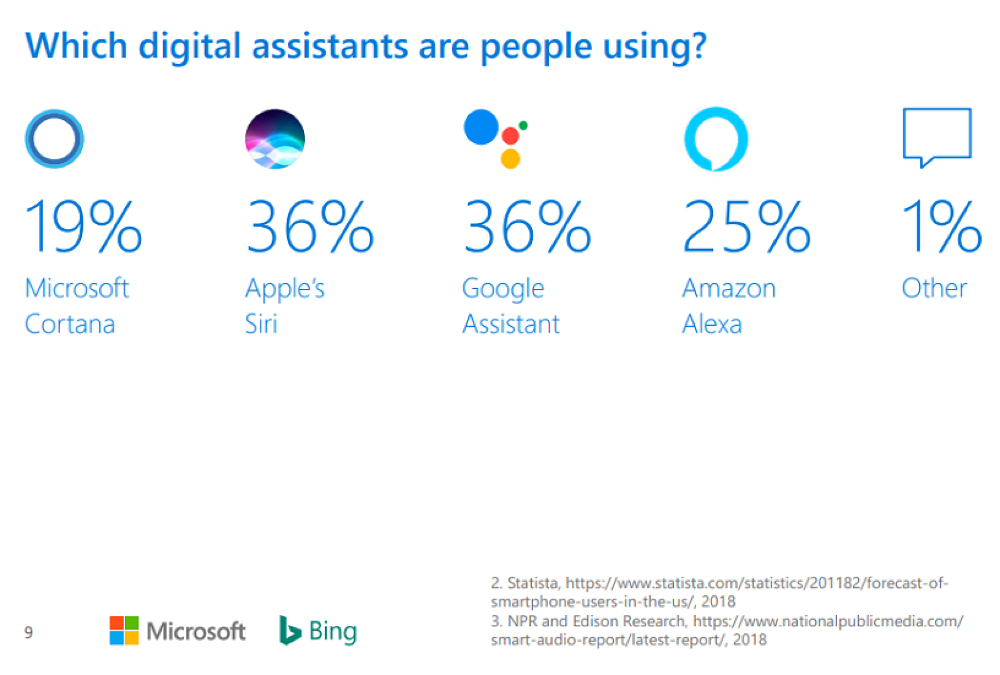

Данные говорят сами за себя. Siri и Google Assistant являются наиболее популярными голосовыми помощниками в мире. На это указывают результаты исследования, проведенного специалистами компании Microsoft.

Согласно опросам, Siri и Google Assistant используют в повседневной жизни 36% пользователей. Оба голосовых ассистента активируются для решения бытовых задач с одинаковой периодичностью и занимают в рейтинге Microsoft первое и второе места соответственно.
Перевес Siri над Google Assistant в противостоянии обусловлен одним важным моментом — совокупным количеством работающих устройств. Как отметили эксперты, в мире значительно больше устройств на базе Android с предустановленным Google Assistant, чем было выпущено iPhone и iPad c встроенным голосовым ассистентом Siri.
Третье место среди наиболее популярных голосовых помощников занимает Amazon Alexa (25%). На четвертой позиции — Cortana, получившая 19% предпочтений пользователей. На долю остальных голосовых ассистентов приходится около 1%.
Стоит отметить, что выводы Microsoft базируются на данных двух онлайн-опросов. В первом опросе (март-июнь 2018 года) участвовало 2000 респондентов из США, Великобритании, Канады, Австралии и Индии. Во втором опросе (февраль 2019 года) приняло участие 5000 респондентов из США.
-
Специальные цены на предзаказ iPhone 11 и iPhone 11 Pro
20 сентября 2019 -
Apple iPhone 7 распродажа остатков по супер ценам
18 сентября 2019 -
До конца сентября дополнительные балы и бонусы при покупке товаров на более чем 30 000 рублей
18 сентября 2019 -
iPhone X снова в наличии, успейте купить. Доступен предзаказ
15 сентября 2019